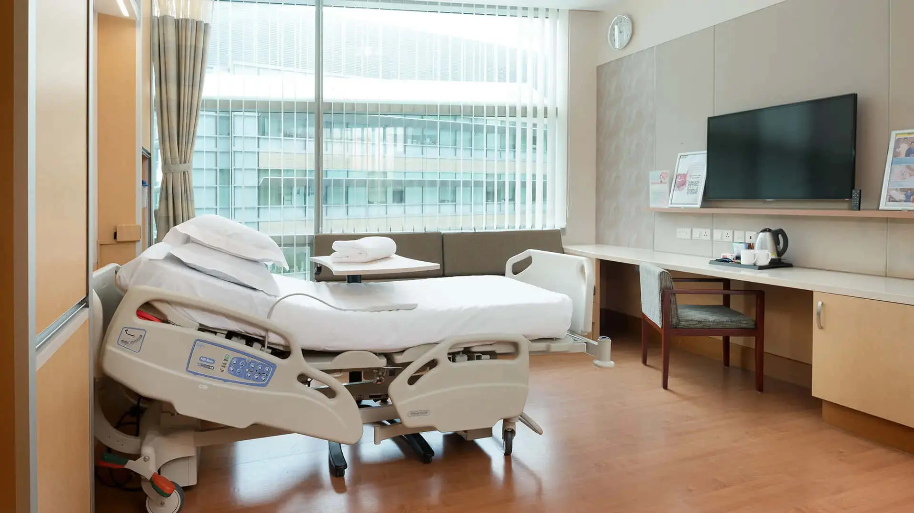
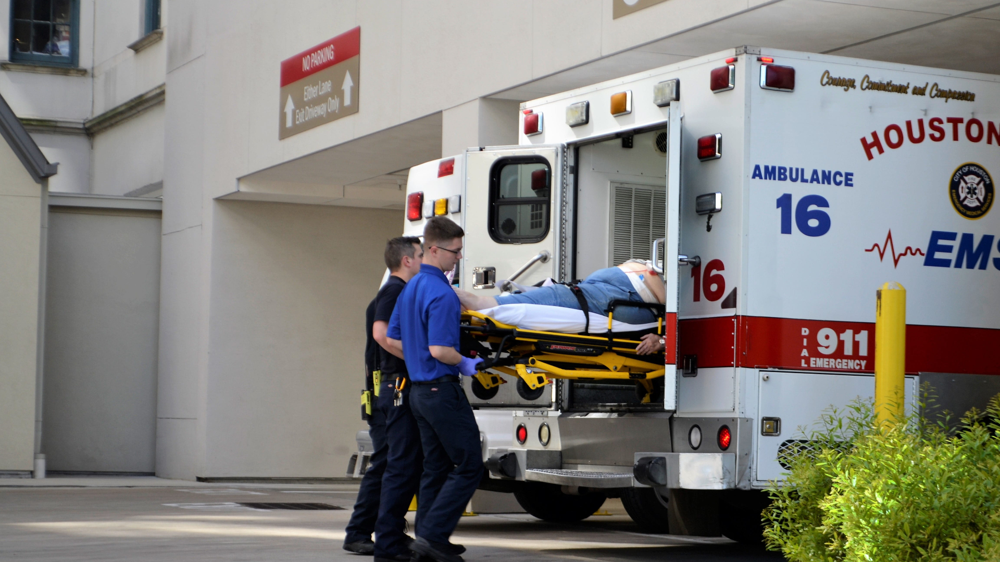

Welcome to Meta Hospital
Meta Hospital is committed to providing exceptional medical care to our community. Our hospital is equipped with state-of-the -art facilities and staffed by a team of highly skilled healthcare professionals dedicated to offering compassionate and comprehensive care to every patient.From emergency services to specialized treatments, our goal is to ensure that you receive the best care possible in a safe and comfortable environment. We believe in a patient-centered approach, where your health, comfort, and well-being are our top priorities. Whether you are here for a routine check-up or a specialized procedure, you can trust us to deliver the highest standard of care with kindness and expertise.
At Meta Hospital, we prioritize patient-centered care and strive to build a trusting relationship with each of our patients. Our multidisciplinary team of healthcare professionals collaborates to provide personalized treatment plans tailored to each individual’s unique needs. We are committed to fostering a healing environment where patients feel supported and empowered throughout their healthcare journey. From preventive care and routine screenings to advanced diagnostics and specialized treatments, we aim to offer a comprehensive range of services designed to promote long-term health and well-being.
Emergency Care Services
At Meta Hospital, our Emergency Department is open 24/7, providing immediate care for urgent medical conditions. Our team of experienced emergency physicians, nurses, and support staff is dedicated to delivering prompt and efficient treatment for a wide range of medical emergencies, from minor injuries to life-threatening conditions. With state-of-the-art facilities and advanced diagnostic tools, we are equipped to handle all types of emergencies with precision and care.
Our Emergency Care unit is equipped with cutting-edge technology and staffed by a highly trained team, ready to respond to any medical situation. From cardiac emergencies and trauma care to pediatric emergencies and stroke treatment, we provide rapid assessment and intervention to ensure the best possible outcomes. Our commitment to excellence extends beyond immediate care; we also focus on seamless coordination with other departments to ensure comprehensive follow-up and rehabilitation support. At Meta Hospital, your safety and well-being are our top priorities, and we are here for you whenever you need us, day or night.
Surgical Services
Our Surgical Services Department offers a comprehensive range of surgical procedures, from minimally invasive surgeries to complex operations. Our team of highly skilled surgeons, anesthesiologists, and surgical nurses work collaboratively to ensure each patient receives the best possible care. We use the latest technology and techniques to minimize recovery time and enhance patient outcomes, ensuring a safe and comfortable surgical experience.
At Meta Hospital, our surgical team is dedicated to providing the highest quality care, using the latest advancements in medical technology and surgical techniques. We specialize in a wide range of surgical procedures, including general surgery, orthopedic surgery, cardiovascular surgery, and more. Our operating suites are equipped with state-of-the-art equipment to ensure precision and safety during every procedure. We also offer comprehensive preoperative and postoperative care, ensuring that each patient receives personalized attention and support throughout their surgical journey. From initial consultation to recovery, our team is here to provide expert care every step of the way.

Maternity and Neonatal Care Services
Meta Hospital's Maternity and Neonatal Care Unit provides comprehensive care for expectant mothers and newborns. Our team of obstetricians, pediatricians, and nurses is committed to supporting families through every stage of pregnancy, childbirth, and postpartum recovery. With comfortable birthing suites, advanced neonatal facilities, and personalized care plans, we strive to make every birth experience safe, joyful, and memorable.
At Meta Hospital, we understand that maternity and neonatal care is a critical and deeply personal experience. Our dedicated team of obstetricians, midwives, and neonatal specialists provides compassionate and expert care to ensure a smooth and joyful journey for expectant families. Our maternity unit offers a range of services, from prenatal education and personalized birthing plans to postnatal support and lactation counseling. We also have a specialized neonatal care unit equipped to handle any newborn needs, from routine check-ups to advanced care for premature or ill infants. Our goal is to create a supportive and nurturing environment where families can focus on welcoming their new addition with confidence and peace of mind.

Additional Services We Offer
- 24/7 Pharmacy Services
- Physical Therapy and Rehabilitation
- Diagnostic Imaging and Radiology
- Patient Education Programs
- Outpatient Specialty Clinics
- Free Wi-Fi throughout the hospital
- Complimentary parking for visitors
- On-site cafeteria and dining options
- Language translation services
- Visitor information and assistance desk